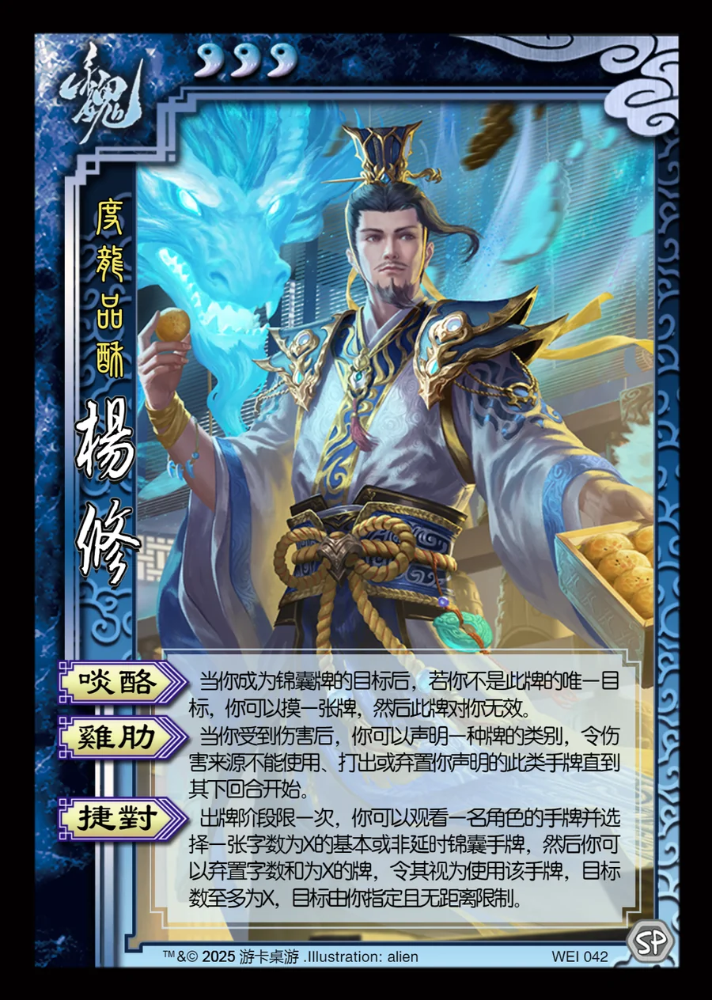

点击卡面查看大图
魏
杨修
♥3度龙品酥
啖酪
当你成为锦囊牌的目标后，若你不是此牌的唯一目标，你可以摸一张牌，然后此牌对你无效。
鸡肋
当你受到伤害后，你可以声明一种牌的类别，令伤害来源不能使用、打出或弃置你声明的此类手牌直到其下回合开始。
捷对
出牌阶段限一次，你可以观看一名角色的手牌并选择一张字数为X的基本或非延时锦囊手牌，然后你可以弃置字数和为X的牌，令其视为使用该手牌，目标数至多为X，目标由你指定且无距离限制。